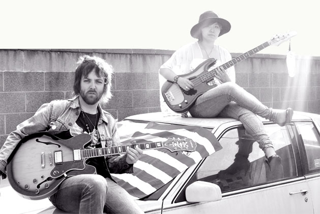

LAYLA
Layla is an LA and Tokyo based soulful & spiritual blues & rock smokin'power-trio, with a nod to your favourite classic rock record collection. Whiskey-Soaked Vocals, Jamming on Tobacco Sunburst Strats, Les Pauls & Marshalls...Roaring Thunderbird Bass...Hammond B-3 Organ Flourishes carressed in, Super-soul female background vocals. Spirit, Feathers, & Soul, that sounds like, The Color Turquoise across the breast of a Navajo." Heart and influences on sleeve. Full On. 60's. 70's. Acoustic. Bellbottoms. Hendrix Bootlegs. 60's Acoustics. Let's invoke a blues revival jam spirit not lost. Good times. That's what we were raised on..